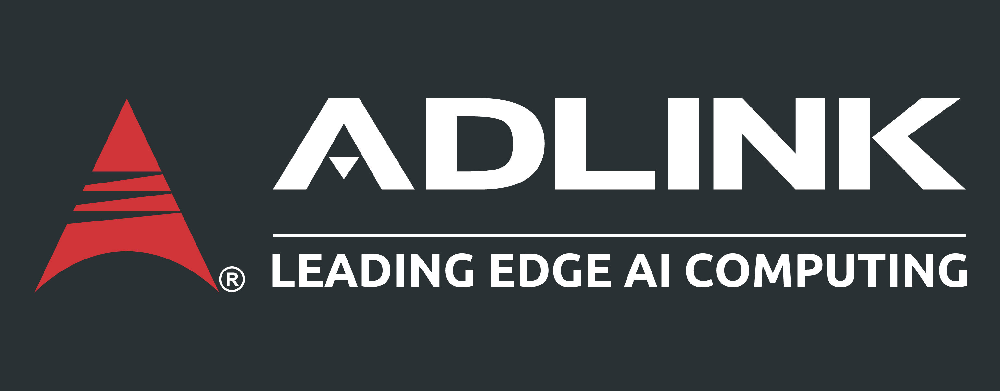

為什麼 AI 做得很快，卻不是你要的？
當任務變長、變複雜，AI 會遇到很多沒有被說明的空白。它會用最合理的方式猜，但合理不等於符合你的工作情境。入門者最需要先練的，不是把 prompt 寫漂亮，而是先找出需求裡還沒被說出口的未知。
AI 入門Prompt需求釐清盲點掃描知識地圖

AI 輸出不對，常常不是模型太弱，而是我們還沒把「自己不知道的事」講清楚。這份教材把未知拆成可操作的提問、訪談、原型與範例流程。
當任務變長、變複雜，AI 會遇到很多沒有被說明的空白。它會用最合理的方式猜，但合理不等於符合你的工作情境。入門者最需要先練的，不是把 prompt 寫漂亮，而是先找出需求裡還沒被說出口的未知。
你給 AI 的指令、背景、文件和範例，是一張地圖；真實的專案、公司規則、資料限制、主管偏好、客戶情境，是地形。地圖沒有畫到的地方，就是 AI 必須猜的地方。
已經能明確說出口的需求，例如要做一份兩頁簡報、對象是 PM、語言用繁體中文。
你知道還沒決定的事，例如預算、格式、資料範圍、評估標準或交付時間。
你覺得理所當然、所以沒講出來的偏好，例如不要太花、要能給主管快速掃讀、不要像廣告文。
你連問題都還不知道怎麼問，例如陌生領域的術語、風險、常見錯誤或判斷好壞的方法。
當你對任務或領域不熟，不要直接要求成品。先請 AI 找出你可能沒想到的限制、問題、資料需求與風險。
請 AI 一題一題問，優先問「答案會改變方向」的問題。這能逼出你知道還沒決定的事。
如果你講不出風格或標準，請 AI 做 3 到 4 個方向差很多的草稿，讓你用反應來建立判斷。
有些標準很難用文字說明。直接給參考文件、網站、報告、程式碼或截圖，並說明要學哪一部分。
盲點掃描 我要做：[任務] 我目前知道：[已知背景] 我不熟的地方：[陌生領域或不確定點] 請幫我做一次 blind spot pass，找出我不知道我不知道的事情。 請輸出： 1. 可能被我忽略的問題 2. 需要先問清楚的決策 3. 常見錯誤 4. 我應該補給你的資料 5. 下一版 prompt 應該怎麼寫 AI 反問訪談 請你一次只問我一個問題，幫我釐清這個任務。 優先問那些答案會改變方向、架構、風格、資料範圍或驗收標準的問題。 等我回答後，再問下一題。 多版本草稿 我現在講不清楚自己要的風格。 請先做 4 個方向差很多的版本，並說明每個版本適合什麼情境。 先不要追求完美，我要用這些版本來判斷我真正想要什麼。 參考範例 請閱讀這個參考：[貼上連結或內容] 我想保留它的：[結構 / 語氣 / 排版 / 判斷邏輯 / 工作流程] 但改成我的情境：[你的任務與限制]
| 工作情境 | 先找未知 | 建議問法 | 避免的問題 |
|---|---|---|---|
| 整理教育訓練教材 | 對象、程度、分類、重複內容、閱讀順序 | 先幫我找這批教材的分類盲點，哪些主題可能重複或缺少入門銜接？ | 只做漂亮頁面，但同事找不到學習路線。 |
| 做技術簡報 | 聽眾背景、決策者關心點、需不需要數據、哪些不能外流 | 請先訪談我，問清楚這份簡報會被誰看、要促成什麼決策。 | 內容很完整，但主管看不出重點。 |
| 寫客戶回覆 | 客戶真正問題、可承諾範圍、風險字眼、下一步負責人 | 幫我列出這封回覆裡有哪些沒講清楚會造成誤解的地方。 | AI 寫得禮貌，但不符合公司承諾邊界。 |
| 分析測試資料 | 測試條件、版本、異常定義、比較基準、缺失資料 | 在分析前，先列出這份資料還缺哪些欄位或背景會影響判斷。 | AI 直接下結論，但忽略測試條件差異。 |
| 建立小工具或自動化 | 輸入格式、例外情況、錯誤處理、權限、安全限制 | 先寫一份實作計畫，最上面列出我最可能需要修改的決策。 | 工具做出來能跑，但遇到真實資料就壞。 |
AI 越強，越能放大你沒講清楚的地方；所以先找未知，再請 AI 動工。
直接要求：請幫我做一次盲點掃描，找出我不知道我不知道的事情。
不是背 prompt，而是把模糊任務拆成背景、限制、決策、範例與驗收標準。
本頁根據公開影音說明、繁體中文字幕與 Anthropic 官方文章整理成入門教材；正文已改寫為內訓筆記，不作原文照錄。